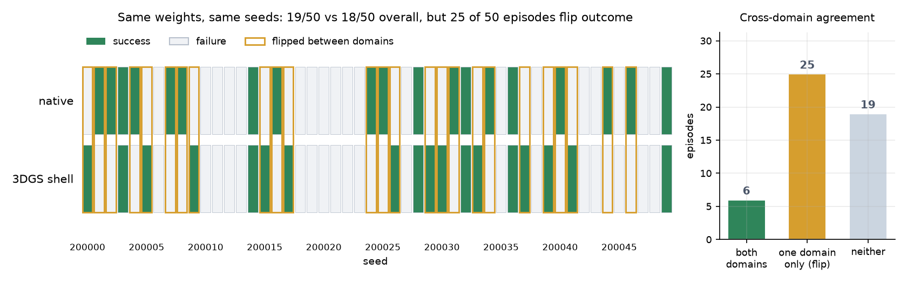
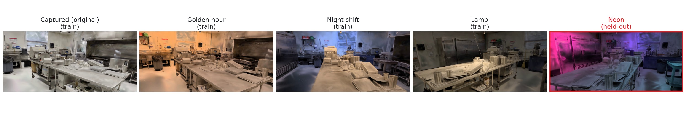
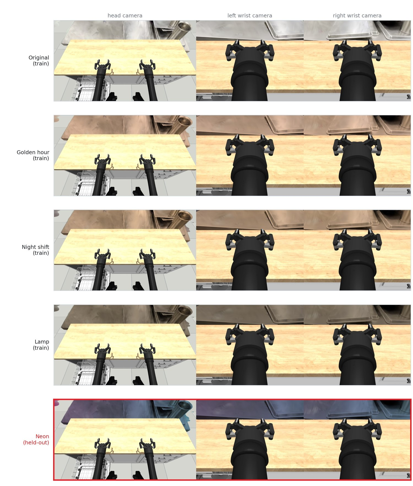
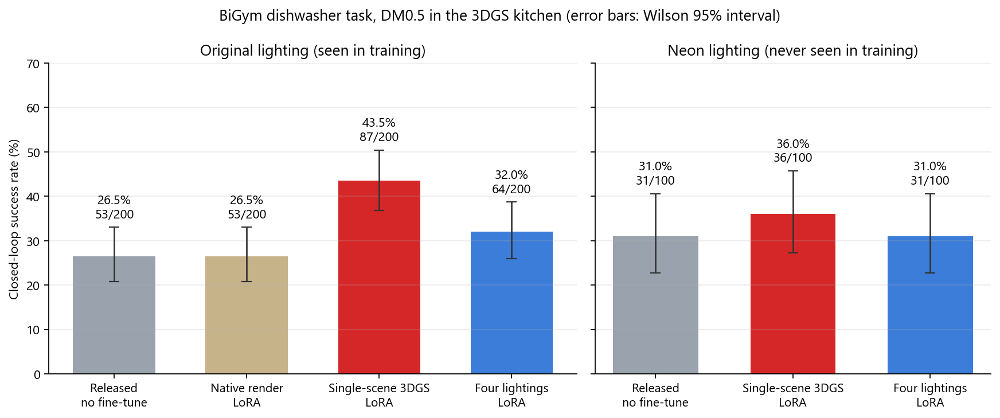
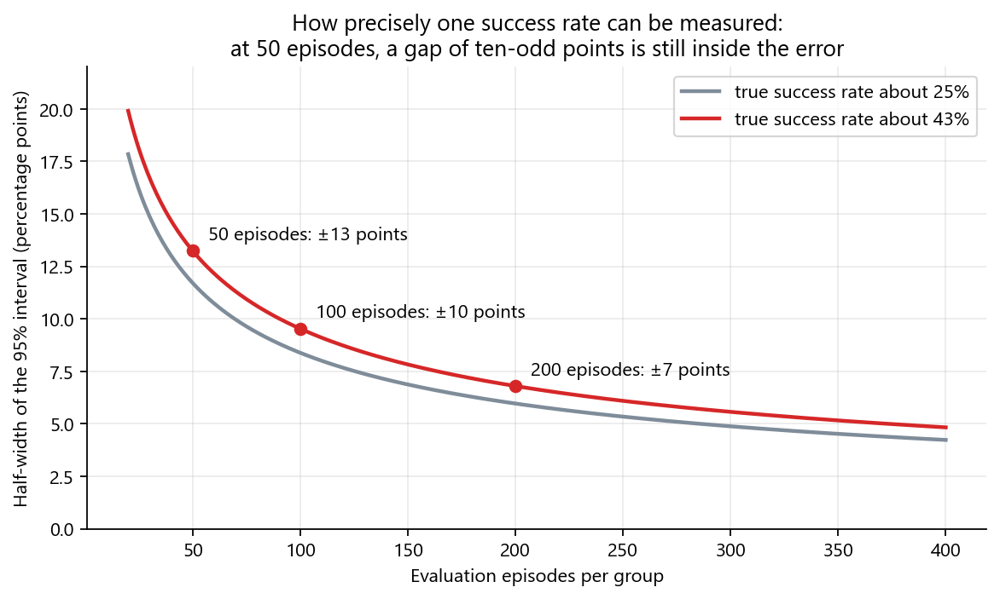
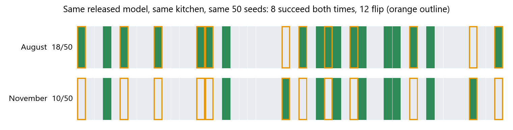
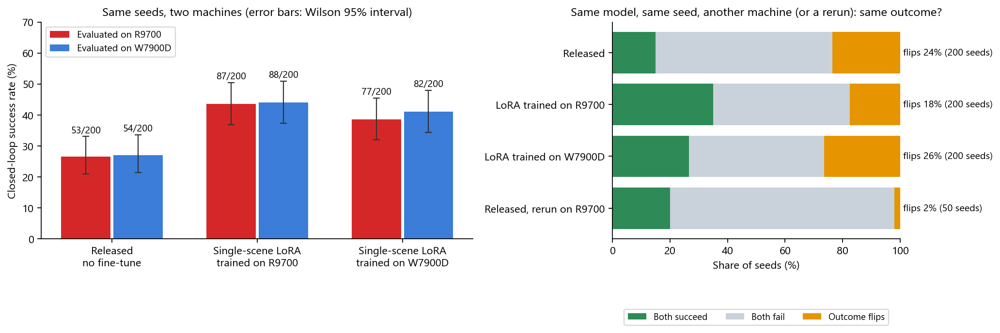

World Labs Atlas · 2026.11.25
Five Lightings, and the Robot Only Knows That One Kitchen: World Labs Atlas × DM0.5 on Radeon









Same robot policy, same random seeds, exactly the same physics. Only the background changes, from the simulator's own materials to a 3D Gaussian reconstruction of a real kitchen. The overall score barely moves: 19/50 against 18/50. Seed by seed, though, 25 of the 50 episodes change outcome. Only 6 succeed on both sides, and 19 fail on both.
If the policy is that sensitive to what things look like, using a world model to build its training scenes is tempting. World Labs' new world model Atlas (the beta is called Marble 2 Beta) takes a photo and a new camera position and draws what you would see from there, with a depth value for every pixel; its Relight feature can also relight an existing 3D scene. I used it to relight the training scenes for Dexmal's DM0.5 and then ran closed-loop evaluation on BiGym's dishwasher task. This is the Radeon replication note, and it answers three more "engineering" questions: how the pipeline from real capture to closed-loop evaluation is built step by step on AMD Radeon; how far the one gain that held up (rendering training data in the deployment scene, 17 points higher DM0.5 success) can be trusted; and whether those 17 points are still there when the same recipe runs on another card.
The conclusion first: rendering training data in the deployment scene lifts DM0.5's closed-loop success from 26.5% to 43.5% (200 seeds), and the gain replicates on both the R9700 and the W7900D. The earlier "did not replicate" on the W7900D was just 50 episodes being too few. Whichever card you train on or evaluate on, the overall score differs by only a few points, but with the same seed on another machine, about one in five episodes changes outcome.
The replication map: which step runs on which card
This series is called "one card, one world", and the earlier notes were mostly done on a single W7900. This pipeline is longer and uses two machines, so here is the full ledger.
Reconstructing the DL3DV kitchen photos into 3D Gaussians runs locally on one Radeon PRO W7900D (gfx1100, 48 GB). Relighting the Gaussians happens in World Labs' cloud, in the web version of Marble, and the relit colors are then carried back onto the original scene on a laptop CPU. Re-rendering the expert demonstrations in the five scenes, LoRA fine-tuning DM0.5, and closed-loop evaluation all run on server A, which has Radeon AI PRO R9700 cards (gfx1201, 32 GB): re-rendering is split into 16 shards, each fine-tuning run uses 3 cards, and evaluation runs one process per card. The cross-machine replication runs on server B, an 8-card Radeon PRO W7900D machine: training one more LoRA takes 3 cards, each of the three models is evaluated on both machines, and evaluation is one process per card. Generating new kitchens from text goes through World Labs' Atlas API, with re-rendering and alignment on the W7900D.
Every individual job fits on one card: reconstruction uses one W7900D, evaluation uses one card per episode, and training uses 3 cards to reach an effective batch of 48. What follows goes in pipeline order.
Reconstructing the kitchen on one W7900D, then putting it into MuJoCo
The scene is a commercial kitchen from the DL3DV-10K dataset. I reconstructed it on one Radeon PRO W7900D with the HIP build of OpenSplat: 1,458,354 Gaussians, PSNR 27.9 dB and SSIM about 0.94 on a held-out photo.
To use it as the simulator's background takes three more things. Alignment: a rigid transform with scale puts it into MuJoCo's world coordinates, with the floor at z = 0. Rasterization: the Gaussians are rendered with gsplat. gsplat 1.4.0 has no prebuilt Radeon wheel, so I built it from source for gfx1201 on the R9700 (ROCm 7.2.3) and built it again for gfx1100 on the W7900D. Compositing: the counter, the dishwasher, the dishes and the arms are still rendered by MuJoCo and layered in front of the Gaussian background using MuJoCo's segmentation map, for the head camera and both wrist cameras. The Gaussians are appearance only and take no part in any collision.
The physics model is therefore bit-for-bit unchanged (126 bodies, 421 geoms), and only what the three cameras see differs. The 25 flipped episodes at the top were measured under these two renderings with the same weights and the same seeds.
The Gaussian transform: a color-only job
Atlas's Relight gave this kitchen four training lightings on the web (captured, golden hour, night shift, lamp) and one held-out lighting (neon). The exported PLY keeps the number and order of the Gaussians but bakes the lighting into the color and keeps only degree-0 spherical harmonics.
The key to the engineering is to transfer color only and leave geometry alone. Each exported Gaussian is matched back to the original scene by position, exactly, across the three layers of wall, chandelier and floor. The degree-0 harmonics (the base color) are taken straight from the relit result. The higher-order harmonics are multiplied per channel by the brightness ratio "relit export / unlit export", clipped to between 0 and 4. Position, orientation, scale and opacity stay byte-for-byte identical, so the original alignment file still applies and nothing on the simulator side changes.
The ceiling on the result is here too: averaged over 519 frames, the pixels the relighting touches are about 1% of the head camera, about 2% of the right wrist, and 15–17% of the left wrist. The head camera spends most of its time looking down at the dishwasher and drawers, where the background fills only a corner.
Recipe and throughput
BiGym ships 32 expert demonstrations, recorded under MuJoCo 3.1.5 and BiGym 4.0. After moving to MuJoCo 3.10 and BiGym 4.1, 30 of them still replay successfully, and every group uses those 30. The scene is appearance only, so the demonstrations can be replayed with the original actions: the robot walks exactly the same trajectory and only the three images change.
There are four training sets. Native render (control): BiGym's own materials, no 3DGS, 30 episodes, 19,719 frames. Single-scene 3DGS: the 3DGS kitchen under its original lighting, the same as the evaluation, 30 episodes, 19,719 frames. Four lightings: original, dusk, night shift and lamp, 120 episodes, 78,876 frames. 100 demonstrations (control): in the 3DGS kitchen, the 30 official demonstrations plus 70 privileged-expert demonstrations, 100 episodes, 65,468 frames.
All groups use the same recipe, adding a new LoRA on top of the released checkpoint: rank 32, alpha 16; global batch 48 (8 per card × 3 cards × 2 gradient accumulation); 1,000 steps; peak learning rate 5e-4 with 100 warmup steps; normalization statistics from the release, from which the official demonstrations deviate by less than 0.03 standard deviations. Evaluation uses the repository's strict 3DGS closed-loop evaluator: 20 Hz control, 8 of every 16 predicted steps executed, at most 800 steps.
The timings on the two cards follow, with the conditions in the sentences; this is not a strict benchmark. Re-rendering one demonstration (three 3DGS cameras) takes about 115 seconds on the R9700. One LoRA training step (3 cards, global batch 48) takes 15–17 seconds on the R9700 and 13.9 seconds on the W7900D. One evaluation episode takes about 170 seconds on the R9700 with one process per card; on the W7900D it takes about 138 seconds with one process per card (only 1 episode measured) and about 180 seconds with two processes per card (averaged over 50 episodes). One DM0.5 inference (BF16, 10 diffusion steps) takes about 670 ms on the R9700 with one process per card, and about 720 ms on the W7900D with one process per card and 780–810 ms with two.
Most of an evaluation episode's time is 3DGS rendering: an episode without the shell takes only about 69 seconds on the R9700. The W7900D's 48 GB fits two evaluation processes; each runs slower, but one card finishes an episode in about 90 seconds on average. Re-rendering the 120 episodes for the four lightings takes 3.8 GPU hours in total, and one LoRA takes about 4.5 hours on the R9700.
Results
All closed-loop success rates below were measured on the R9700. Under the original lighting: the released model without fine-tuning 53/200 (26.5%), the native-render LoRA 53/200 (26.5%), the single-scene 3DGS LoRA 87/200 (43.5%), the four-lighting LoRA 64/200 (32%), and the 100-demonstration LoRA 27/100 (27%). Under the held-out neon lighting: the released model 31/100 (31%), the single-scene 3DGS LoRA 36/100 (36%), and the four-lighting LoRA 31/100 (31%).
Paired comparisons use McNemar's exact test, each pair on the same seeds. Single-scene against released, 200 seeds, 87 against 53, p = 0.0002. Single-scene against native render, 200 seeds, 87 against 53, p = 0.0001. Native render against released, 200 seeds, 53 against 53, p = 1.0. Single-scene against four lightings, 200 seeds, 87 against 64, p = 0.003. Single-scene against 100 demonstrations, 100 seeds, 41 against 27, p = 0.009. Under neon, four lightings against released, 100 seeds, 31 against 31, p = 1.0. The last 100 seeds of the released model were measured on 16 November on the same R9700.
In one sentence: rendering training data in the deployment scene helps, fine-tuning in some other rendering does not, and varying the lighting adds nothing on top. The native-render LoRA and the un-tuned release are identical over 200 seeds, 53 each, which says the gain does not come from "1,000 more steps of training" but from the images matching the deployment environment. Why varying the lighting did not help, and why adding more demonstrations made things worse, I leave aside here; this note stays on the 17 points.
Do not let 50 episodes fool you
Every closed-loop episode takes two or three minutes, so samples are expensive, and that is exactly where it is easiest to fool yourself statistically.
First, the error at 50 episodes is bigger than you think. With a true success rate near 43%, the 95% interval is about ±13 points at 50 episodes, about ±10 at 100, and about ±7 at 200.
Second, measuring the same model twice also gives different answers. The same released model, the same kitchen and the same 50 seeds scored 18/50 in August and 10/50 in November, with 12 seeds flipping, 10 of them from success to failure. The software versions and rendering patches changed between August and November, and several processes shared the GPU during evaluation; measuring again on the same November day gave 11/50, almost the same as 10/50. So a single evaluation is stable in itself, and the change of environment between the two runs is enough to open a 16-point gap (paired p = 0.039).
Third, adding samples after seeing the result has to be disclosed honestly. Single-scene against native render differed by only 11 points over the first 100 seeds (p = 0.071). I decided to re-test on 100 fresh seeds only after seeing that result. So that "adding samples" does not inflate the evidence, the re-test is read on its own: 46 against 23 (p = 0.0004), same direction, and only after that are they pooled into the 200 seeds above.
The rule that follows: compare only within one environment, pair every comparison on the same seeds, and run at least 100 episodes per group.
Does the 17-point gain survive a change of card
Earlier on the W7900D, the single-scene LoRA trained from scratch with the same recipe scored only 15/50 over 50 episodes, against 14/50 for the released model on the same machine. It looked like it had not replicated. There were three candidate causes: a different card for training, a different card for evaluation, or 50 episodes being too few.
To pull them apart I ran a 2×2. Two single-scene LoRAs, one trained on the R9700 and one on the W7900D, with identical data and recipe. Together with the released model, the weights of all three models were copied to both machines and evaluated on the same 200 seeds, with the same evaluator, arguments and kitchen scene. The two machines ran 1,200 closed-loop episodes in total.
The released model without fine-tuning scored 53/200 (26.5%) on the R9700 and 54/200 (27.0%) on the W7900D. The single-scene LoRA trained on the R9700 scored 87/200 (43.5%) and 88/200 (44.0%) on the two. The single-scene LoRA trained on the W7900D scored 77/200 (38.5%) and 82/200 (41.0%). Three things can be read from this.
First, the gain holds on both cards. Compared pairwise on the same machine, both LoRAs beat the released model by 12 to 17 percentage points: p = 0.0002 and 0.012 on the R9700, p = 0.0004 and 0.005 on the W7900D. The earlier "did not replicate" was too few samples: the same W7900D-trained LoRA, extended to 200 seeds, scores 82 against 54 on the W7900D.
Second, where you train makes no visible difference. The two LoRAs differ by 5 points on the R9700 (p = 0.20) and by 3 points on the W7900D (p = 0.50), both inside the noise. One caveat: apart from the hardware, the two training runs also differ in their randomness, and this experiment cannot separate the two. To separate them you would train several times on the same machine with different random seeds.
Third, where you evaluate: the total is stable, the individual episode is not. The same model's success rate differs by at most 2.5 points between the two machines. Seed by seed, though, 18% to 26% of the seeds change outcome on another machine, against only 2% when the same machine runs again. My guess is that small differences between the two architectures in floating-point order and rendering get amplified step by step over an 800-step closed loop. Fortunately the flips are symmetric: the released model has 23 seeds that succeed only on the R9700 and 24 only on the W7900D, so the total holds steady.
A single episode's outcome is nearly chaotic with respect to the hardware; the only thing that travels across machines is the total over enough episodes. That adds a line to the rule above: do paired comparisons on one machine, compare only totals across machines, and make sure there are enough episodes.
Pitfalls on ROCm
A silent segmentation-render error. When several EGL renderers work at once, MuJoCo's read of the segmentation image occasionally returns color data and raises an IndexError, and when it raises, the scene's segmentation flag is not reset. After that, every RGB frame comes out in segmentation colors, the cabinets turn dark red, and nothing reports an error. The first batch of data and training had to be thrown away and redone. The fixed patch resets the flag, forces RGB rendering with segmentation off, and rejects frames that look like segmentation images; in the final evaluation each process re-rendered segmentation 21 to 157 times and rejected 0 RGB frames.
Three GPU numbering schemes. rocm-smi, the ROCm runtime (ROCR_VISIBLE_DEVICES) and EGL (MUJOCO_EGL_DEVICE_ID) can number the same card differently: on the R9700 machine, card 7 in rocm-smi is card 4 to the runtime, and on the W7900D machine EGL's order is exactly the reverse of rocm-smi's. The repository's own training and evaluation scripts are correct only on card 0. My scripts use rocm-smi numbering everywhere and convert by PCI bus.
gsplat's just-in-time compilation. Every process relinks the extension when it loads, and several processes sharing one cache directory read a half-written .so. I changed it to one private cache per job.
A shared server. On the R9700 machine other users occasionally take cards, which once left a training run and several evaluation shards out of memory. Evaluation now schedules in chunks by free memory, retries failures automatically, and reruns only the missing seeds.
One card resets and takes the machine's whole evaluation down with it. During the cross-machine replication, the W7900D machine initially ran two evaluation processes per card, and the 16 processes all exited together after about 11 episodes each. The kernel log shows a gfxhub page fault on card 2, then, a dozen seconds later, the MES (the firmware on the GPU that schedules queues) on card 7 stopped responding and the driver did a mode1 reset on it. That one reset took out the evaluation processes on all 8 cards of the machine. The rerun uses one process per card, chunks of 8 seeds, automatic retry of failed chunks, and no repeat of seeds already finished.
Changing cards does not change the code, but three things change: the architecture number, the numbering table and the cache directory.
Atlas new worlds: how far it got on the W7900D
Relight only changes the lighting; what Atlas really excels at is building a whole room from text. This part sits on the W7900D: text-to-image, localization, filling in 24 views with depth in one request, and rebuilding a draft splat go through the Atlas API, while re-render checks, alignment and gating run locally. The design of the camera positions, the prompt and the gate is not covered here.
The pipeline was tested offline with a synthetic room: with the coordinate convention right, the re-render PSNR is 51 dB, and with it deliberately flipped it drops to 7.6 dB; the estimated eye height is 1.59 m, matching the 1.6 m that was set. But the five Atlas worlds themselves have not been generated yet. When I checked the server on 15 November the worlds directory was still empty, waiting for API quota.
Takeaways
Align first, diversify later. In this task, "training and deployment are the same scene" works before "more varied scenes" does, and fine-tuning in an unrelated rendering amounts to not training.
A conclusion has to pass statistics first. Fifty episodes can hide a real 17 points, and can also invent ten-odd points out of nothing. Pairing, enough seeds, and a second machine: I would not state a conclusion missing any one of them.
Do not chase a single seed across machines. The same seed on another machine changes outcome one time in five. Staring at one episode to ask why it differs between two machines is most likely chasing noise.
The evaluation pipeline has to survive a GPU reset. One reset can take every process on a machine with it. Chunked scheduling, retries and rerunning only the missing seeds are far more dependable than running everything in one go.
The Atlas new worlds are the next step. The pipeline already works end to end on the W7900D, and as soon as quota arrives it will generate five kitchens and use the same 2×2 idea to measure what "having seen more kitchens" is actually worth.
Three things to take away
Rendering training data in the deployment scene lifts DM0.5's closed-loop success from 26.5% to 43.5%, and it replicates on both the R9700 and the W7900D; fine-tuning in the native render gives no gain at all.
Varying the lighting adds nothing; the 50-episode "did not replicate" was too small a sample, and 200 seeds brought it back.
The same model and the same seed change outcome about one time in five on another machine: keep paired comparisons on one machine, and across machines compare totals only.
Links: World Labs Atlas announcement https://www.worldlabs.ai/blog/atlas ; DL3DV-10K https://huggingface.co/datasets/DL3DV/DL3DV-ALL-2K ; BiGym https://github.com/chernyadev/bigym ; DM0.5 https://huggingface.co/Dexmal/DM05 ; OpenDM https://github.com/dexmal/opendm ; gsplat https://github.com/nerfstudio-project/gsplat
DL3DV-10K is licensed CC BY-NC 4.0, for non-commercial research use only.